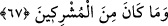

65. Ey ehl-i kitap! İbrâhîm hakkında niçin çekişirsiniz? Halbuki Tevrat ve İncil,
kesinlikle ondan sonra indirildi. Siz hiç düşünmez misiniz?
“Ey kitap ehli (yahûdî ve hıristiyanlar) İbrâhîm’in dîni ve şerîati hakkında neden
tartışıyor, niye mücâdele ediyorsunuz? Yahûdî ve hıristiyanlar İbrâhîm (a.s.) hakkında
anlaşmazlığa düşmüşlerdi. Her biri, İbrâhîm (a.s.)’ın, kendilerinden olduğunu iddiâ
ediyordu. Neticede konuyu Hz. Peygamber (s.a)’e götürdüler, bunun üzerine bu âyet
nâzil oldu. Âyetin mânası şudur:
“İbrâhîm (a.s.)’in kendinizden olduğunu niye iddiâ ediyorsunuz? Mûsâ (a.s.)’a
Tevrat, Îsâ’ya İncil, ancak İbrâhîm (a.s.)’dan sonra indirilmiştir. Siz ise,
kitaplarınızın nüzûlünden sonra yahûdîlik ve hıristiyanlık diye adlandırıldınız.
Düşünmüyor musunuz?” Düşünerek, yolunuzun bâtıl olduğunu anlayamıyor da hâlâ
sonuç vermeyecek bir mücâdele içine mi giriyorsunuz? Çünkü İbrâhîm (a.s.)’le Mûsâ
(a.s.) arasında 1000 sene, Mûsâ ile Îsâ (a.s.) arasında ise 2000 sene vardır. Böyle
olmasına rağmen, Hz. İbrâhîm nasıl kendi devrinden ancak asırlar sonra ortaya çıkmış
bulunan bir dînin mensubu olabilir?
66. İşte siz böyle kimselersiniz! Hadi hakkında bilgi sahibi olduğunuz konuda
tartıştınız; fakat bilgi sahibi olmadığınız konuda niçin tartışıyorsunuz! Oysa ki
Allah, her şeyi bilir, siz ise bilmezsiniz.
“Siz öyle kimselersiniz ki” şeklinde başlayan cümle, tenbih edatıyla başlayan bir
mübteda haber cümlesidir. Bu cümle, son derece büyük bir gaflet içinde olduklarını
göstermek için yeni bir cümle ile beyân edilmiştir. Yani: Siz, öyle ahmaksınız ki
demektir. Çünkü Hz. Muhammed (s.a.)’in peygamberliği ile ilgili Tevrat ve İncil
âyetlerinden biraz bilgi sahibi olduğunuz şey hakkında tartıştınız, ama hiç bilginiz
olmayan şey hakkında neden tartışıyorsunuz? Ne kitabınızda geçen, ne de bilgi sahibi
olduğunuz İbrâhîm’in dîni hakkında tartışıyorsunuz. Çünkü, bu iki kitabın hiç birinde Hz.
İbrâhîm (a.s.)’in dîninden hiçbir şekilde bahsedilmemektedir. Tartıştığınız şeyi Allah
bilir ve bize öğretir. Siz ise bu konuyu bilmezsiniz.